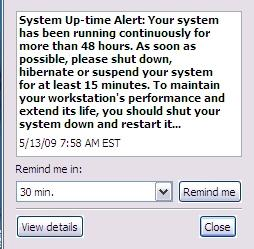

Yes, Master
Dogs are the leaders of the planet. If you see two life forms, one of them's making a poop, the other one's carrying it for him, who would you assume is in charge? - Jerry Seinfeld
I'm not in the habit of bagging Microsoft. No, really. Oh, all right, I am.
 Have a look at this picture. I swear that it's for real. It popped up on more than one occasion on my company laptop. I don't know whether it came from XP, some other piece of Microsoft software, or some other software altogether. But it just beggars belief!
I just looked on my Linux desktop: uptime - 126 days. I don't even think that's a particularly impressive number.
All right, my desktop is not a laptop. So?!
And what is it with turning it off for at least 15 minutes? Nap time?! Imagine if they used this technology in, oh, fridges! Ships! Rockets to the moon! Military equipment! I'm sorry. Your war is important to us. To maintain your military lethality and extend its life, please shut down your war for at least 15 minutes.
Monday
OK, I've arrived at the office. 7:45 am. Nice and early. Good. I'm a morning person. It's great to come in before most of the others get in. Gives me time to do some work that requires concentration before the distraction level ramps up.
Wonder why they put us into these open-plan areas. Do they really think they are saving money? Or is it to do with pecking order? They're paying me a shirt-load of money, and yet I can hear the guy way over there on the phone to one of his customers. Try to concentrate. Crumbs, he's loud! They used to call me loud, but now I'm in the presence of a real master.
Get out the laptop. Turn it on. Get some real work done. Come on, boot up already! First password. Second password. Come on, XP! Finally: login password. What's it doing?
What's this? Virus scanner. Updating signatures. No response for me. Come on!
Why did I turn on this #@$#&^ing computer? Who's the human? WTF is going on here?
What now? Some of my software is out of date. I don't even use that software. Why would I care if it is out of date? I just wanna do some work, for crissake! Who's in charge here?
Start up Adobe. Wait for it to update something. This is crazy!
There seems to be this view that I'm the laptop's lackey. I'm here to service its requirements. It gives the orders; I follow. Its needs are more important; mine are secondary.
Are we for real? The lunatics are in charge of the asylum!
A better way
Are we saying that we have reached the pinnacle of technical engineering? That this is the best we can do?
Well, we know that there are various forms of improvement. On my Linux systems, I run no regular antivirus software. Or antispyware. Or any other sort of anti-malware software. (The only reason I have any antivirus software at all is so that I can scan my teenage son's Microsoft computer.)
The argument is that if Linux were as ubiquitous as Microsoft, then the malware generators would attack Linux. As it is, they're just after the low-hanging fruit.
All right. Let's accept that. For the sake of argument, let's assume that it is necessary to update things on a Microsoft PC. Fine. Can't we do that in a less obnoxious way?
Let's start with some low-hanging fruit of our own.
Sometimes, I reboot my computer repeatedly in a short space of time. (Never mind why; it can happen.) Is it really asking too much of the cretinous antivirus software to keep track of when it was last invoked (or when I last rebooted), and to not even run if less than X hours have elapsed?! And, OK, if some user actually wants every one of the three reboots in the last hour to be followed by a scan, let him/her configure the software to do that. Hell, I don't even mind if it's the default. Just give me the option to do what I want.
That's what's really missing from a lot of software which runs on Microsoft platforms: user choice. The technology which should be the most liberating has been engineered to be antidemocratic. And down-right irritating.
OK. There are times during the day when I get up from my seat and walk away from my desk. Corporation rules say that I'm supposed to screenlock the laptop when I leave. Even if I don't, after a few minutes, the laptop does it anyway. Hey, you now know that I'm not at the computer. You know I'm not pressing keys. Wouldn't you think that now would be a good time to use up CPU cycles? I don't need them. I've gone off to make myself a coffee and discuss the weekend's footy with Alex.
I come back to the computer, enter my password. Don't abort what you were doing; pause it. You are a machine of infinite patience. (Or software of infinite patience.) Make a little note somewhere of where you were up to - and take a break. When I wander off next time, continue from where you left off.
Eventually, I head off for lunch. Hey, knock yourself out. Scan all the hard drives. As far as I care, make the whole machine walk across the desk from the vibrations. Do whatever you need to do. Just make sure you pause when I come back.
I'm at work for about 8 hours. Despite the little pop-up I showed before, I often turn on the laptop on Monday morning and don't turn it off again until Friday evening. In 24 hours, I only use 8-10 hours. You can have a minimum of 14 hours to do whatever you want. Just not on my watch.
What am I missing?
Is this so hard?
Is it beyond the capabilities of the mind of Homo Sapiens?
Perhaps it would not be possible 100% of the time. Sometimes, perhaps, something might need to be updated urgently. Personally, I think this most unlikely - but I entertain the possibility. But even if we can only arrange things so that I am undisturbed 90% of the time, that's still a huge improvement over what I see currently.
You can not be serious!
[Pace, John McEnroe.]What is it with Microsoft and reboots?! Look at this:
OK, it's a joke, a reductio ad absurdum of the state of play at Microsoft. Compare that to BeOS which was designed to never need rebooting. Perhaps it's asking a bit too much of Microsoft to never need rebooting.
But why does it need to reboot if I change my IP address? Or a host of other fairly innocuous changes I make to the system?
All day long, I am bombarded with stupid questions: Are you sure? Did you really mean that? Is it OK to reboot now? Do you want fries with that? No, wait, that last one was from some other company.
Now here's an idea: how about, when I ask to shutdown or reboot, I get a prompt? Wouldn't that be a perfect time to say something like this?
X Hey! All day long I've been nagging you to upgrade your software, all the while discouraging you with threats that such upgrades will almost certainly necessitate a reboot (which I call a "restart" because God forbid we should spook the bunnies who use our, um, software with technical terms). Well, I notice that you're about to shutdown or restart. Is now a good time to do those upgrades? I mean, do you have the time? (If you're heading home, you could take a pit-stop.) If now is not convenient, that's OK. I'll remind you next time. OK Cancel
First of all, isn't that a good idea? And second, just maybe, isn't that a more appropriate tone for a pile of silicon to adopt when addressing a superior life-form?
Perhaps I shouldn't be surprised. I've always thought that Microsoft treats its users with contempt. Surely the tone it adopts in its dialogues and messages supports that view. The smug little utterances like "Windows must shutdown your computer now". The higher power has spoken!
Of course, once it has completed the upgrade, when it's time for the, ahem, restart, it will take cognizance of my original selection. In particular, if I chose to shutdown, it will, at this time, shutdown.
When next I fire up my machine, it will proceed with any subsequent actions needed to complete the install. The idea is to maximise utility and convenience for me. Because I'm the human.
It's not about you; it's about me.
Scanning for Pleasure
Turn on wife's machine. Windows 98. What's this? Disk scan? Scan disk? What is it doing? Just another way to slow me down.
In fairness, I should say that I haven't seen this on XP. But on my wife's Windows 98, it is very frequent.
I speculate that one day, quite some time ago, Bill was walking past a machine when it was booting into Linux. It was just at the point where it was doing an fsck.
"What's happening?" he asked.
The Linux user explained it to him.
Later, Bill summoned his Council of Technical Acolytes.
"Linux does something called fsck when it starts up. I want something like that for our next release of Windows."
"But, Sire," offered one of his Council. "We don't need to do that. Our software works differently."
"Nonsense!" snapped Bill. "If Linux has it, we need a competitive story. We can't be open to criticism that we lack technical rigour.
"Further, we need it for another reason. It's important that our users get into the habit of obeying, preferably without thinking. If they ever get to thinking about our offering, well, ..." He trailed off, shaking his head to discard the unthinkable.
"OK, gentlemen. Take notes. Here's how it's going to work. We will insist that they shutdown their machines in a certain way. It's important that they learn to follow orders. We'll detect if they obeyed. If they did, fine. The plan is working.
"If not, we'll use this - what did he call it? fsck? Stupid name - we'll use our version of fsck to punish the user."
Sensing resistance, he glared at the members of his Council. One or two, whose hands had been up, lowered them.
"Excellent! Now let's get down to the most important part of this exercise. fsck is such a stupid name. And anyway it's used by the competition. So what will we call it?"
Bill looked up encouragingly. It looked like he was really asking for suggestions. Several names were bandied around. Bill's countenance darkened.
"You don't seem to be getting it. None of your suggestions reach out to me. I guess I have to do everything myself. Now let me think ..."
The buzz of conversation died down as the The Great One cogitated, the silence broken only by an almost imperceptible sound, like gears grinding.
"I've got it!" he cried out in satisfaction. "SCANDISK."
He looked triumphantly around the Council Chamber.
"But, Sire, don't we already have something called DISKSCAN?"
"That's not the same thing at all!" snapped Bill. "Hands up anyone who thinks SCANDISK is like, um, DISKSCAN."
It doesn't actually do anything - unless you call moving the progress bar doing something. It's just there to punish recalcitrance.
And the ultimate irony? Soon afterwards, Linux adopted a journaled file system, eliminating the need to check the file system even after an unclean shutdown.
You're probably thinking to yourself that my wife and I get what we deserve. I'd agree with you about me; but my wife is what is so coyly referred to as collateral damage.
Do you want to know why we have to run SCANDISK all the time? Because Windows lies to us.
My wife finishes her work. She shuts down as prescribed - by clicking on Start (!) and then following the bouncing ball. Eventually a splash screen appears.
Windows is shutting down
She waits. She does other things. It's time for bed, so she performs her nightly ablutions. She likes to read before going to sleep. You're not really interested in my wife's nightly routine.
Hours later, the stupid machine still hasn't turned off. She calls me to investigate. I look at her screen.
Windows is shutting down
Bill's message looks back at me mockingly. How much can a koala bear? Enraged, I turn off the power at the wall.
Next time her machine is powered up, Bill gets his revenge. D'oh!
Talkback: Discuss this article with The Answer Gang
![[BIO]](../gx/authors/grebler.jpg)
Henry was born in Germany in 1946, migrating to Australia in 1950. In his childhood, he taught himself to take apart the family radio and put it back together again - with very few parts left over.
After ignominiously flunking out of Medicine (best result: a sup in Biochemistry - which he flunked), he switched to Computation, the name given to the nascent field which would become Computer Science. His early computer experience includes relics such as punch cards, paper tape and mag tape.
He has spent his days working with computers, mostly for computer manufacturers or software developers. It is his darkest secret that he has been paid to do the sorts of things he would have paid money to be allowed to do. Just don't tell any of his employers.
He has used Linux as his personal home desktop since the family got its first PC in 1996. Back then, when the family shared the one PC, it was a dual-boot Windows/Slackware setup. Now that each member has his/her own computer, Henry somehow survives in a purely Linux world.
He lives in a suburb of Melbourne, Australia.